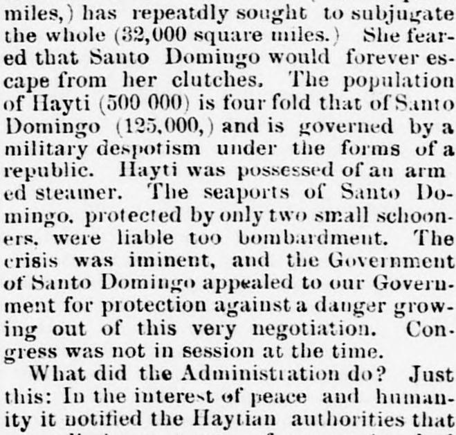
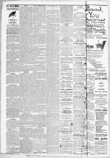

Just I this; In the interest f peace and human- IPrecisamente esto; En interés de la paz y la human-
The Cecil Whig. Elkton, Md., October 5, 1872. Page 2. View the originalVer el original


See the full pageVer la página completaThe newspaper reported that when Santo Domingo faced an imminent crisis and appealed to the United States for protection during an ongoing annexation negotiation, the U.S. Administration notified Haytian authorities that an invasion would be regarded as unfriendly to the U.S. until Congress decided on the treaty. Additionally, the President sent American warships into Dominican waters at the request of the Dominican Government, which successfully prevented conflict and kept the peace between Hayti and Santo Domingo without firing a shot or landing sailors on Haytian territory.El periódico refirió que, al afrontar Santo Domingo una crisis extrema y acudir en demanda de auxilio a los Estados Unidos durante las tratativas de anexión, el gobierno de Washington advirtió a las autoridades de Haití de que cualquier invasión sería juzgada como un acto inamistoso contra los Estados Unidos hasta tanto el Congreso se pronunciase sobre el tratado. Asimismo, el mandatario destacó buques navales estadounidenses en aguas dominicanas a instancias del gobierno de Santo Domingo, logrando disuadir las hostilidades y preservar la paz entre ambas naciones insulares sin haber efectuado un solo disparo ni desembarcado marinería en suelo haitiano.
FULL TEXT:TEXTO COMPLETO:
1. The alleged outrage upon Hayti occurred as follows: No sooner was it known that a negotiation for annexation was pending than preparations were made by the Haytian authorities to invade their feeble neighbor, instigated to this course by the deplomatic representatives of certain European Powers, who were jealous of American suprmacy. Hayti, which comprises less than one-third of the island (10,000 square miles,) has repeatdly sought to subjugate the whole (32,000 square miles.) She feared that Santo Domingo would forever escape from her clutches. The population of Hayti (500 000) is four fold that of Santo Domingo (125,000,) and is governed by a military despotism under the forms of a republic. Hayti was possessed of an armed steamer. The seaports of Santo Domingo, protected by only two small schooners, were liable too bombardment. The crisis was iminent, and the Government of Santo Domingo appealed to our Government for protection against a danger growing out of this very negotiation. Congress was not in session at the time.1. El presunto ultraje contra Haití ocurrió como sigue: Tan pronto como se supo que una negociación para la anexión estaba pendiente, las autoridades haitianas hicieron preparativos para invadir a su débil vecino, instigadas a este curso por los representantes diplomáticos de ciertas Potencias europeas, que estaban celosas de la supremacía estadounidense. Haití, que comprende menos de un tercio de la isla (10,000 millas cuadradas,) ha buscado repetidamente subyugar el todo (32,000 millas cuadradas.) Temía que Santo Domingo escapara para siempre de sus garras. La población de Haití (500 000) es cuádruple de la de Santo Domingo, (125,000,) y está gobernada por un despotismo militar bajo las formas de una república. Haití poseía un vapor armado. Los puertos marítimos de Santo Domingo, protegidos por solo dos pequeñas goletas, estaban expuestos a bombardeo. La crisis era inminente, y el Gobierno de Santo Domingo apeló a nuestro Gobierno por protección contra un peligro surgido de esta misma negociación. El Congreso no estaba en sesión en ese momento.
What did the Administration do? Just this: In the interest of peace and humanity it notified the Haytian authorities that a preliminary treaty of annexation had been negotiated, and that, until Congress should have expressed its decision, an invasion of the Dominican territory by any foreign Power would be regarded as an act unfriendly to the United States.¿Qué hizo la Administración? Simplemente esto: En interés de la paz y la humanidad notificó a las autoridades haitianas que un tratado preliminar de anexión había sido negociado, y que, hasta que el Congreso hubiera expresado su decisión, una invasión del territorio dominicano por cualquier Potencia extranjera sería considerada como un acto inamistoso hacia los Estados Unidos.